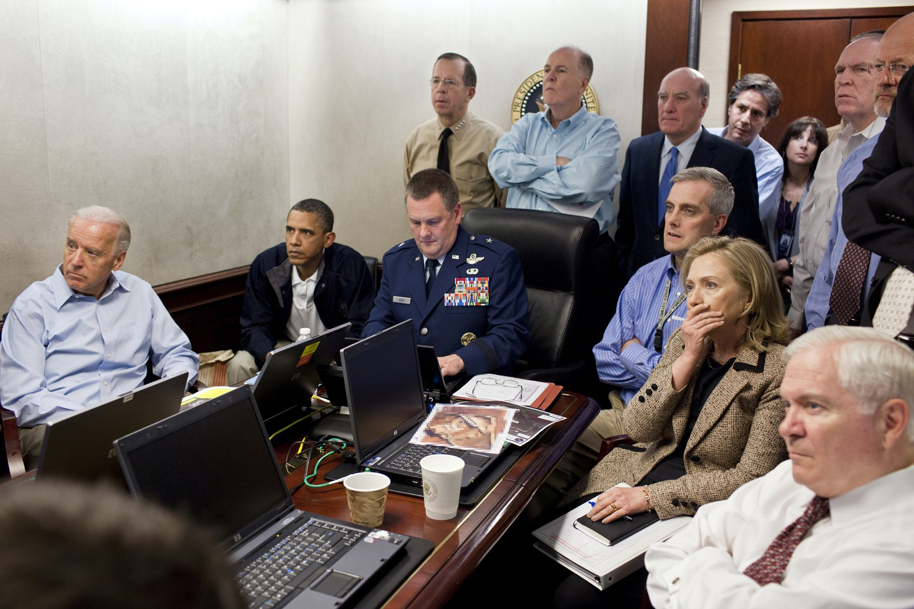

Directions: Study the photograph and the background, then answer the questions.

Background. This photograph shows the president and his national security team following a raid in progress in Abbottabad, Pakistan, on May 1, 2011. The raid killed Osama bin Laden, the leader of al Qaeda, the network that had carried out the attacks of September 11, 2001. The hunt that ended in that room had begun on the night of the attacks, when a different president stated the rule the response would follow, and it had been carried on under laws passed in the fall of 2001.
1. Describe what the photograph shows, and explain what mission the room was following. Name the man the raid targeted, the network he led, and the city and country where the raid took place.
2. State the toll of the September 11 attacks, and quote exactly the rule President Bush stated on the night of the attacks about the terrorists and those who sheltered them.
3. Name the law Congress passed on September 18, 2001, give its votes in the Senate and the House, and state in its own terms how far its force reaches and who decides the targets.
4. Define the USA PATRIOT Act as the guided notes state it, and state what its Section 102 declared about the civil rights and civil liberties of Arab and Muslim Americans.
5. Define the Department of Homeland Security as the guided notes state it, and give the year it was created.
1. Describe the photograph and the mission. The photograph shows President Barack Obama seated with his national security team in a small White House Situation Room, watching updates from a raid in progress. The raid targeted Osama bin Laden, leader of al Qaeda, at his compound in Abbottabad, Pakistan, on May 1, 2011. Bin Laden was killed in the raid. Credit requires the man, the network, and the place. (Blueprint 11)
2. State the toll and quote the rule. The attacks killed 2,977 people. The rule, in President Bush's words of September 11, 2001: "We will make no distinction between the terrorists who committed these acts and those who harbor them." The quotation must be exact. (Blueprint 11)
3. Name the law of September 18, 2001, its votes, and its reach. The Authorization for Use of Military Force. It passed the Senate 98 to 0 and the House 420 to 1. Its text authorizes the president to use all necessary and appropriate force against those nations, organizations, or persons he determines planned, authorized, committed, or aided the September 11 attacks, or harbored such organizations or persons. The president makes the determination. The definition in the answer must match the guided notes. (Blueprint 11)
4. Define the USA PATRIOT Act and state Section 102's declaration. The definition must match the guided notes: the law of October 2001 that widened the government's powers of surveillance, search, and detention in terrorism investigations, passed by overwhelming margins in the weeks after September 11. Section 102 condemned discrimination against Arab and Muslim Americans and declared that the civil rights and civil liberties of all Americans, including Arab Americans, Muslim Americans, and Americans from South Asia, must be protected. (Blueprint 12)
5. Define the Department of Homeland Security. The definition must match the guided notes: the cabinet department created in 2002 that merged twenty two federal agencies and offices charged with protecting the country against terrorist attack and disaster. The year is 2002. (Blueprint 12)
Teacher note. This check is formative. Question 1 is the observation diagnostic: students who cannot connect the room in 2011 to the night in 2001 have missed the lesson's line. Questions 2 and 3 predict success on the blueprint 11 half of the unit test, and questions 4 and 5 on the blueprint 12 half, because each requires the votes, the toll, and the definitions in the student's own words.